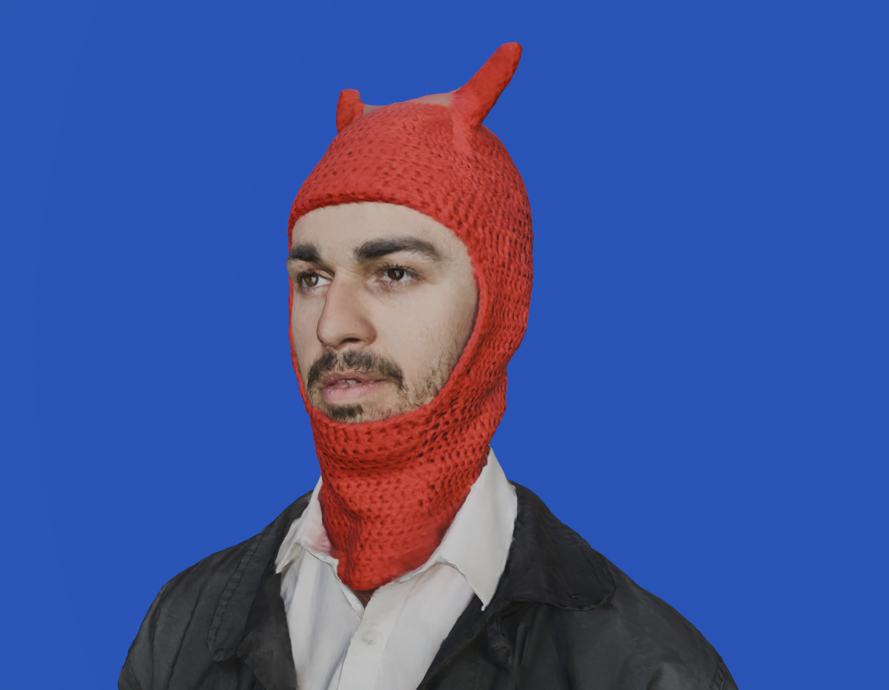

Samuel Austin

The Lost Era.
The work you will see and (hear) here is my work.
I live in London.
The picture below is taken near a studio in fat canary wharf.
These friendly GIF are being made in a studio in the mile ex, Montreal.
I'm from Wellington, New Zealand.
This could be the most website you will ever visit.





Patreon !